สธ. ประกาศรายชื่อ “สมุนไพรไทย” 22 ชนิดเสี่ยงสูญพันธุ์ เหตุเติบโตช้า เมื่อใช้ต้องใช้ทั้งต้น หรือทั้งราก หรือใช้บ่อยจึงรักษาได้ คัดเลือกสมุนไพร 7 ชนิด ออกประกาศคุ้มครองและควบคุม ผู้ครอบครองต้องแจ้งจำนวนที่มี เพื่อทำแผนการใช้และการปลูกทดแทน
สธ. ประกาศรายชื่อ “สมุนไพรไทย” 22 ชนิดเสี่ยงสูญพันธุ์ เหตุเติบโตช้า เมื่อใช้ต้องใช้ทั้งต้น หรือทั้งราก หรือใช้บ่อยจึงรักษาได้ คัดเลือกสมุนไพร 7 ชนิด ออกประกาศคุ้มครองและควบคุม ผู้ครอบครองต้องแจ้งจำนวนที่มี เพื่อทำแผนการใช้และการปลูกทดแทน
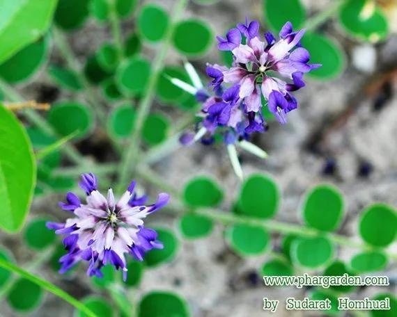
1.ถั่วดินโคก*
 2.เทพทาโร*
2.เทพทาโร*
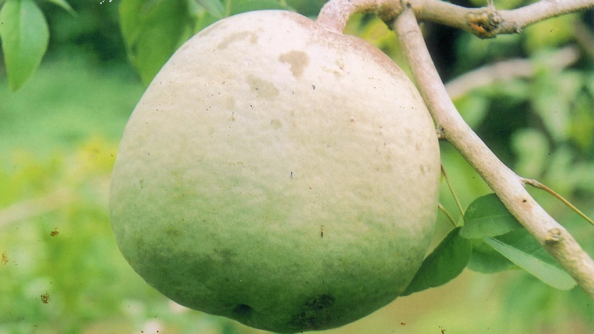
3.มะตูมนิ่ม*
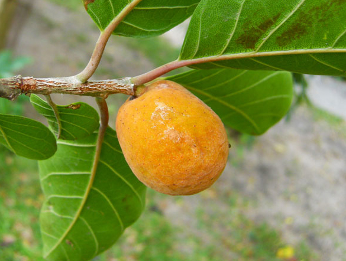
4.มะหาด*
 5.เร่ว*
5.เร่ว*
 6.หัวร้อยรู*
6.หัวร้อยรู*
 7.กระทุ่มนา
7.กระทุ่มนา
 8.ขันทองพยาบาท
8.ขันทองพยาบาท
 9.จุกโรหินี
9.จุกโรหินี
10.ชะเอมไทย
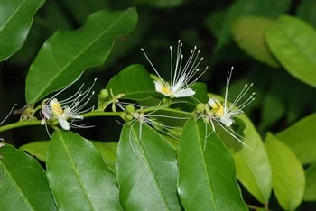
11.ชิงชี่
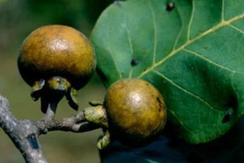
12.ตับเต่า
 13.นางแย้มป่า
13.นางแย้มป่า
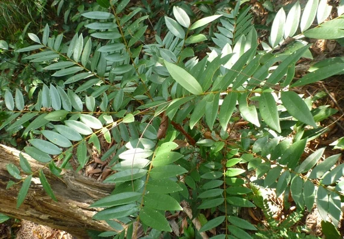
14.ปลาไหลเผือก
 15.พังคี
15.พังคี
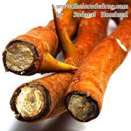
16.มะคังแดง
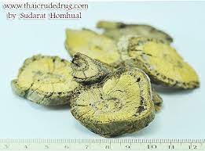
17.สะค้าน
 18.สารภีป่า
18.สารภีป่า
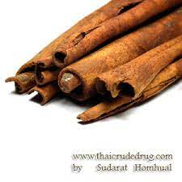
19.อบเชยไทย
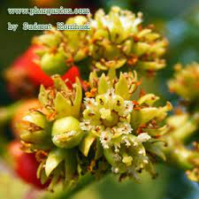
20.เฉียงพร้านางแอ
 21.เถาเอ็นอ่อน
21.เถาเอ็นอ่อน
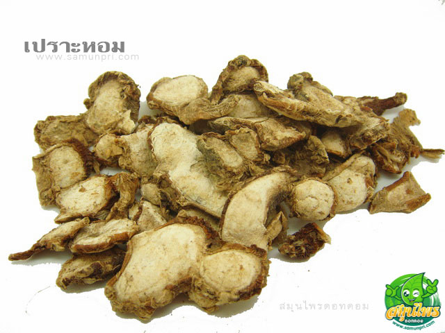
22.เปราะหอม
หมายเหตุ * คือสมุนไพรคุ้มครองและควบคุม
นายนันทศักดิ์ โชติชนะเดชาวงศ์ กล่าวว่า "คณะกรรมการคุ้มครองและส่งเสริมภูมิปัญญาการแพทย์แผนไทยได้ประชุมหารือกัน โดยเลือกสมุนไพร 6 ชนิดจาก 22 ชนิดขึ้นมา คือ ถั่วดินโคก หรือ พิษนาศน์ เทพทาโร มะตูมนิ่ม มะหาด เร่ว และ หัวร้อยรู นอกจากนี้ ยังเสนอสมุนไพร “กระวาน” ขึ้นมาเป็นพิเศษด้วยอีกชนิดหนึ่ง เพื่อประกาศคุ้มครองและเป็นสมุนไพรที่ต้องควบคุม โดยหากใครมีสมุนไพร 7 ตัวนี้อยู่ในครอบครองไม่ได้ถือว่ามีความผิด เพียงแต่ต้องแจ้งมาทาง สธ. ให้รับทราบว่ามีอยู่เท่าใด เพื่อที่จะจัดทำแผนส่งเสริมการปลูกต่อไป เช่น บริษัทใดมีสมุนไพร 7 นี้อยู่ ใช้ผลิตยาไปเท่าใด ต้องปลูกทดแทนเท่าใด เพื่อไม่ให้สูญพันธุ์ เป็นต้น"
ขอขอบคุณข้อมูลจาก : MGR Online และ บ้านและสวน